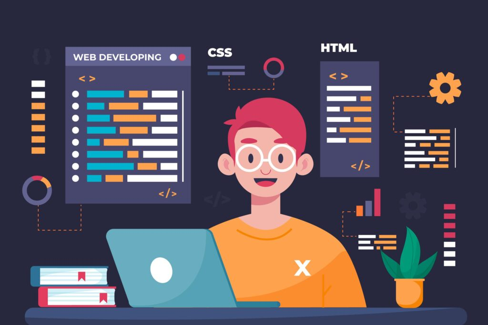

DevOps Card
DevOps is a collection of two words "Development" and "Operations," representing a culture appproach that emphasizes collaboration between development and operatons teams to streamline the entire software delivery lifecycle.
- Continuous Integration (CI)
- Countinuous Development (CD)
- Insfrastructure as Code (IaC)

Full Stack Developer
Roadmap
A comprehensive roadmap for becoming a full stack developer, covering various technologies and skills requried in both front-end and back-end development.
- HTML/CSS
- JavaScript
- Node.js

Web Development Trends
Explore the latest trends in web development, including advancement in technologies, frameworks, and best prectices shaping the future of web development.
- Progressive Web Apps (PWAs)
- Serveriess Architecture
- Single Page Applications (SPAs)